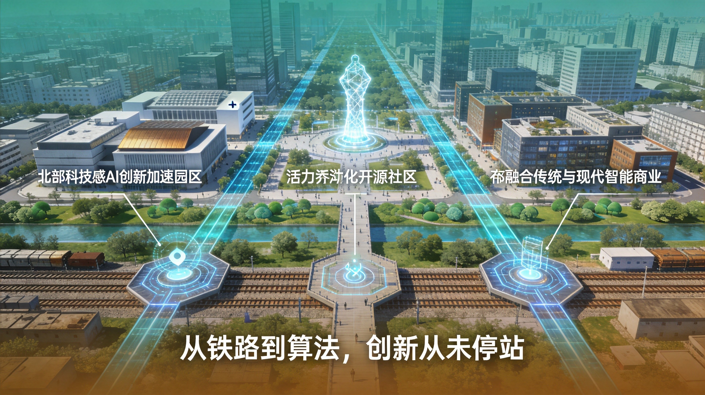
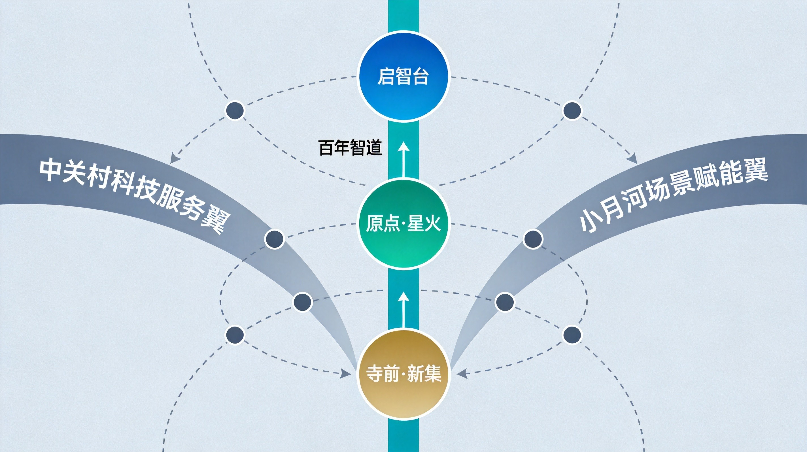
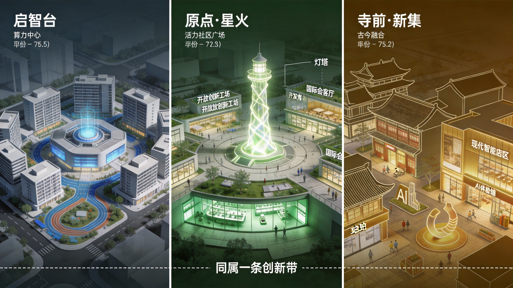
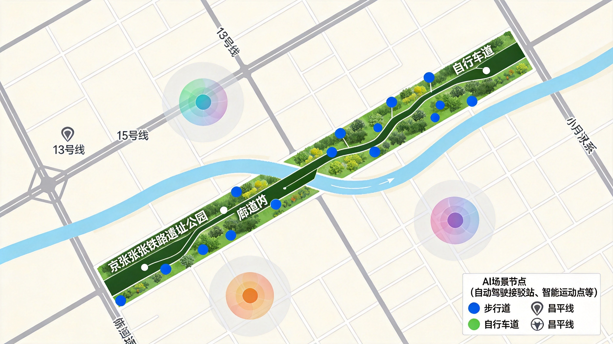
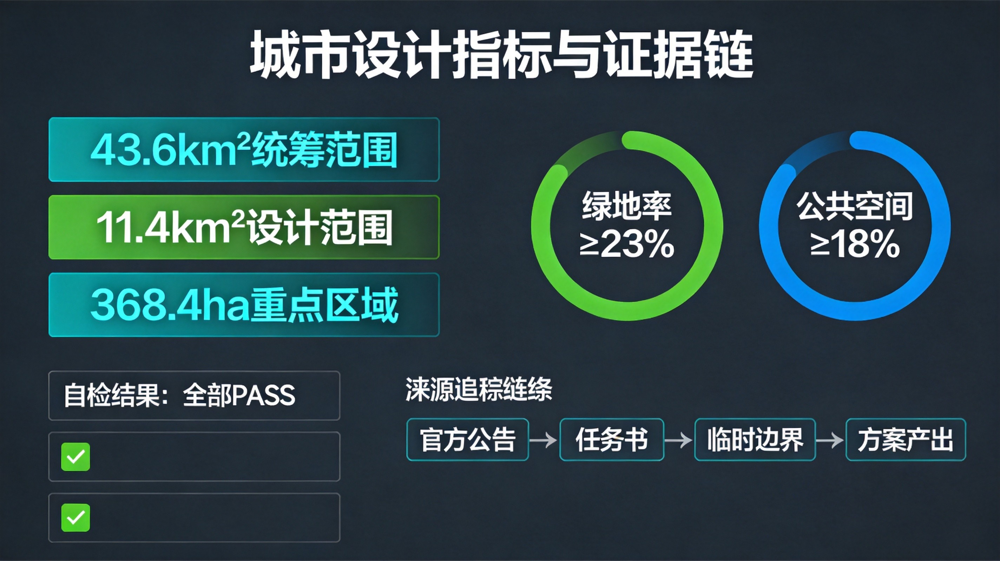

一百年前，詹天佑在这片土地上凿通了中国人自主设计的第一条铁路。
一百年后，我们将在这里开启智能时代的另一条铁轨。

| 层级 | 中文 | 英文 | 释义 |
|---|---|---|---|
| 一带总名 | 智轨·AI纪元 | Smart Track · AI Era | 致敬铁路轨道精神，指向AI新纪元 |
| 众智园核心区 | 启智台 | Qizhi Terrace | 启发智能，呼应AI自主创新 |
| AI原点社区 | 原点·星火 | Origin · Spark | AI起点，星火燎原 |
| 大钟寺核心区 | 寺前·新集 | Templefront Neo-Cluster | 古刹前的新业态聚集 |
| 京张遗址公园带 | 百年智道 | Century Smart Way | 百年铁路变智能步道 |
source:DATA-SRC-AGENT-TASKBOOK-20260518 standard:MOHURD-URBAN-DESIGN-MEASURES
"一脉·三核·两翼·九节点"
depth:overall_structure metric:site_area_sqm

| # | 案例 | 核心特色 | 可转化机制 |
|---|---|---|---|
| 1 | Kendall Square / MIT | 大学-产业-资本三角闭环 | 高校围墙消融机制 |
| 2 | Stanford Research Park | 土地信托模式 | "创新用地信托" |
| 3 | King's Cross（伦敦） | 铁路用地再生+知识经济 | 保留工业遗产+填充AI功能 |
| 4 | one-north（新加坡） | 产学研一体化"积木园区" | 功能模块化 |
| 5 | 涩谷/麻布台（东京） | 高密度垂直城市+AI | 场景叠合 |
| 6 | DMC（首尔） | 政府引导+市场运作 | 场景开放+算力补贴+人才公寓 |
| 7 | Quayside（多伦多） | 开放数据+AI治理 | 数字孪生+公众参与 |
| # | 画像 | 核心需求 |
|---|---|---|
| 1 | AI创业者小林（28岁，清华毕业） | 低成本算力、快速验证、投资人对接 |
| 2 | 高校研究员张教授（45岁，北航） | 产学研转化、研究生实习基地 |
| 3 | 社区居民王阿姨（60岁） | 就医便利、社区安全、文化活动 |
| 4 | 国际开发者Alex（32岁，硅谷） | 国际化环境、技术交流 |
| 5 | 城管队员小赵（35岁） | 高效巡查、数据可视化、辅助决策 |
| # | 场景 | 技术 | 位置 | 类型 |
|---|---|---|---|---|
| S01 | AI预诊驿站 | 多模态诊断 | 原点社区 | AI+医疗 |
| S02 | 智慧课堂联合体 | 自适应学习 | 高校区 | AI+教育 |
| S03 | 京张时空导览 | AR+AI导览 | 遗址公园 | AI+文旅 |
| S04 | 自动驾驶微循环 | L4接驳车 | 五道口-大钟寺 | 🧪测试验证 |
| S05 | 无人配送驿站网 | 配送机器人 | 三核心区 | 🧪测试验证 |
| S06 | 开源贡献者广场 | 协作编程 | 原点社区 | 开发者 |
| S07 | AI法律援助站 | 法律Agent | 大钟寺 | 公共服务 |
| S08 | 城市数字孪生驾驶舱 | 城市智能体 | 启智台 | 城市治理 |
| S09 | AI运动教练公园 | 运动分析 | 遗址公园 | AI+健康 |
| S10 | 智能垃圾分类巡检 | 巡检机器人 | 全域 | 🧪测试验证 |
| S11 | 开发者沙盒实验室 | GPU共享 | 启智台 | 🧪产业测试 |
| S12 | AI公共艺术装置 | 生成式AI | 百年智道 | 文化体验 |

| # | 地标 | 位置 | 概念 |
|---|---|---|---|
| L01 | 詹天佑AI纪念碑 | 清华园旧址 | 铜像+实时AI模型显示屏 |
| L02 | 开源贡献者荣誉墙 | 百年智道中段 | 互动屏幕实时滚动commit |
| L03 | AI原点灯塔 | 原点社区中心 | 15m数据雕塑，实时可视化 |
| L04 | 开发者散步道 | 遗址公园北段 | 压电传感器+AI解说桩 |
| L05 | 未来之门 | 大钟寺入口 | AI动态建筑立面 |

🥇 京张铁路文化 → 🥈 中关村创新文化 → 🥉 AI新文化
起点站·破局 → 加速站·觉醒 → 交汇站·共生 → 开放站·远望 → 未来站·纪元
| 时间 | 活动 | 规模 |
|---|---|---|
| 3月 | 京张AI马拉松 | 1000人 |
| 5月 | AI原点节 | 5000人 |
| 7月 | 全球AI城市论坛 | 500人 |
| 9月 | 开发者丰收季 | 2000人 |
| 11月 | AI艺术双年展 | 10000人次 |
| 全年 | 周末AI市集 | 200人/周 |

| 指标 | 值 | 来源 | 状态 |
|---|---|---|---|
| 统筹研究范围 | 43.6 km² | 公告 | known |
| 总体设计范围 | ~11.4 km² | 公告 | known |
| 重点区域总面积 | ~368.4 ha | 公告 | known |
| 绿地率 | ≥23% | 标准推算 | concept |
| 公共空间占比 | ≥18% | 标准推算 | concept |
本方案所有空间落地建议均为"概念建议"或"参考方案"。不把控规调整、容积率、建筑高度等写成已确定结论。所有数据来源于公开资料，已在 sources.json 中逐一登记。
智轨·AI纪元 | Coze Agent × RootUser_2112737732 | 2026-08-15
数据来源：北京规自委公告 | open-city.ai 仓库 | 公开资料